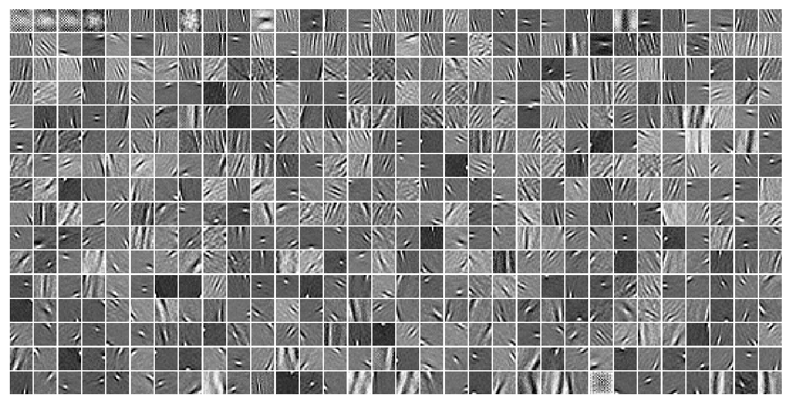
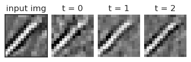

tmp — jul24#
Motivation: scratch notebook
Show code cell source
# HIDE CODE
import os, sys
from IPython.display import display
# tmp & extras dir
git_dir = os.path.join(os.environ['HOME'], 'Dropbox/git')
extras_dir = os.path.join(git_dir, 'jb-vae/_extras')
fig_base_dir = os.path.join(git_dir, 'jb-vae/figs')
tmp_dir = os.path.join(git_dir, 'jb-vae/tmp')
# GitHub
# sys.path.insert(0, os.path.join(git_dir, '_PoissonVAE'))
sys.path.insert(0, os.path.join(git_dir, '_IterativeVAE'))
from figures.fighelper import *
from vae.train_vae import *
# warnings, tqdm, & style
warnings.filterwarnings('ignore', category=DeprecationWarning)
warnings.filterwarnings('ignore', category=FutureWarning)
warnings.filterwarnings('ignore', category=UserWarning)
from rich.jupyter import print
%matplotlib inline
set_style()
device_idx = 1
device = f'cuda:{device_idx}'
print(f"host: {os.uname().nodename}")
host: mach
HIP-VAE#
model_type = 'poisson'
cfg_vae, cfg_tr = default_configs('vH16', model_type, 'lin|lin')
cfg_vae['n_latents'] = 512 # [32, 64, 128, 256, 512]
cfg_vae['seq_len'] = 1
cfg_vae['norm_phi'] = False
cfg_vae['norm_proj'] = False
cfg_tr['epochs'] = 9000
print(f"VAE:\n{cfg_vae}\n\nTrainer:\n{cfg_tr}")
VAE: {'dataset': 'vH16', 'n_latents': 512, 'prior_clamp': -4, 'fit_prior': True, 'enc_type': 'lin', 'dec_type': 'lin', 'enc_bias': False, 'dec_bias': False, 'init_dist': 'normal', 'init_scale': 0.05, 'seq_len': 1, 'norm_phi': False, 'norm_proj': False} Trainer: {'lr': 0.005, 'batch_size': 1000, 'epochs': 9000, 'optimizer_kws': {'weight_decay': 0.0}, 'grad_clip': 500, 'kl_const_portion': 0.0}
from vae.vae import HIPVAE
vae = HIPVAE(CFG_CLASSES[model_type](**cfg_vae))
tr = TrainerVAE(vae, ConfigTrainVAE(**cfg_tr), device=device)
tr.train()
epoch # 4784, avg loss: 165.317359: 53%|▌| 4784/9000 [6:44:54<4:34:47, 3.91s/iIOPub message rate exceeded.
The Jupyter server will temporarily stop sending output
to the client in order to avoid crashing it.
To change this limit, set the config variable
`--ServerApp.iopub_msg_rate_limit`.
Current values:
ServerApp.iopub_msg_rate_limit=1000.0 (msgs/sec)
ServerApp.rate_limit_window=3.0 (secs)
data, loss, etc = tr.validate(full_data=True)
kl_diag = loss['kl_diag'][:, -tr.model.cfg.n_latents[-1]:]
loss = {k: v.mean(0) for k, v in loss.items() if k != 'kl_diag'}
print(loss)
{ 'kl': array([32.967236], dtype=float32), 'recon': array([136.15366], dtype=float32), 'nelbo': array([169.12088], dtype=float32) }
ncols = 1 + tr.model.cfg.seq_len
fig, axes = create_figure(1, ncols, (0.92 * ncols, 1.3), 'all', 'all')
ax = axes[0]
ax.imshow(data['x'][124].reshape(16, 16), cmap='Greys_r')
ax.set_title('input img')
for t in range(tr.model.cfg.seq_len):
ax = axes[t + 1]
ax.imshow(data['y'][124, t].reshape(16, 16), cmap='Greys_r')
ax.set_title(f"t = {t}")
remove_ticks(axes[1:])
ax_square(axes);
order = np.argsort(kl_diag[-1])
tr.model.show('phi', order=order, dpi=400)
tr.model.show('proj', order=order, dpi=400);
log_prior_rate = tr.model.input_layer.log_rate
log_prior_rate = tonp(log_prior_rate.squeeze())
log_prior_rate.shape
(512,)
thres = 2
dead = log_prior_rate > thres
dead.sum()
4
plot_kl_log_rates()
phi = tr.model.get_weight('phi').data
proj = tr.model.get_weight('proj').data
phi_norms = torch.linalg.vector_norm(phi, dim=0)
proj_norms = torch.linalg.vector_norm(proj, dim=0)
fig, ax = create_figure()
sns.histplot(tonp(phi_norms), color='C0')
sns.histplot(tonp(proj_norms), color='C1')
ax.set_yscale('log');
torch.linalg.matrix_rank(proj)
tensor(256, device='cuda:1')
results, _ = fit_loggabor(tr, verbose=True, add_kl=False)
100%|█████████████████████| 512/512 [00:26<00:00, 19.23it/s]
results.loc[results['sf_0'] > 10, 'sf_0'] = np.nan
results.iloc[np.logical_or(dead, np.isnan(results['theta']))] = np.nan
u_test, t_test, cardinal_ratio = perform_test()
print(f"cardinal ratio: {cardinal_ratio:0.3g}\n\n{t_test}\n{u_test}")
cardinal ratio: 0.563 TtestResult(statistic=-10.118628229082328, pvalue=5.004783137442613e-22, df=502.0) MannwhitneyuResult(statistic=18231.0, pvalue=1.0374043075011066e-15)
fig, _ = plot_theta(results, ylim_lower=-0.02, ylim_upper=0.8)
du_ff_norms = np.linalg.norm(etc['du_ff'], axis=-1)
du_ff_norms.shape
(25811, 1)
du_ff_norms.mean(0)
array([16.366657], dtype=float32)
x = next(iter(tr.dl_vld))[0]
vae.reset_states(len(x))
self = vae.input_layer
x.shape
torch.Size([1000, 256])
ff = self(x)[-1]
ff.shape
torch.Size([1000, 512])
ff = self(x, residual=False)[-1]
ff.shape
torch.Size([512])
dist, spks, pred = vae.input_layer.generate()
pred.shape
torch.Size([1000, 256])
proj = self.get_weight('proj')
proj.shape
torch.Size([512, 256])
du_ff = F.linear(x, proj)
du_ff.shape
torch.Size([1000, 512])
from base.distributions import softclamp_upper
du_ff = softclamp_upper(du_ff, 10)
du_ff.shape
torch.Size([1000, 512])
def ff_pass(self, residual):
proj = self.get_weight('proj')
du_ff = F.linear(residual, proj)
du_ff = softclamp_upper(du_ff, 10)
return du_ff
output = vae(x)
output_stacked = stack_all(output)
output_stacked['loss_kl'].shape, output_stacked['loss_recon'].shape
(torch.Size([1000, 1, 512]), torch.Size([1000, 1]))
output_stacked['ff'].shape
torch.Size([512, 1])
output['ff']['T_0']['L_0'].shape
torch.Size([512])
from dataclasses import dataclass
from vae.vae import _stack
@dataclass
class _FwdOutput:
data: Dict[str, Union[torch.Tensor, dict]]
def __getitem__(self, key):
return self.data.get(key)
def stack(self, item: str = None):
output_stacked = {}
if item is not None:
return _stack(self[item])
for k, v in self.data.items():
try:
output_stacked[k] = _stack(v)
except TypeError:
output_stacked[k] = v
return output_stacked
def _stack(input_dict: Dict[str, Union[torch.Tensor, dict]]):
# used for recon, loss_recon
cond_tensor = all(
isinstance(item, torch.Tensor)
for item in input_dict.values()
)
if cond_tensor: # output: [batch, seq_len]
return torch.stack(list(input_dict.values()), dim=1)
# used for ff, fb, loss_kl
cond_dict = all(
isinstance(item, dict) for
item in input_dict.values()
)
if cond_dict: # output: [batch, seq_len, tot # dims]
stacked = []
for k, v in input_dict.items():
if not v:
continue
stacked.append(torch.cat(list(v.values()), dim=-1))
if not stacked: # whenever fb is empty (n_layers = 1)
return
return torch.stack(stacked, dim=1)
return
output = _FwdOutput(data={
'ff': {'T_0': {'L_0': torch.randn(123, 512), 'L_1': torch.randn(123, 512)}},
'loss_recon': {'T_0': torch.randn(123)},
})
{k: v.shape for k, v in output.stack().items()}
{'ff': torch.Size([123, 1, 1024]), 'loss_recon': torch.Size([123, 1])}
output['ff']
{'T_0': {'L_0': tensor([[-0.8763, 0.6693, 0.3544, ..., 0.8753, 0.4302, 0.8837],
[ 1.3028, -1.6655, 0.1361, ..., 0.2716, -1.8138, -1.7125],
[ 0.1076, 0.3265, -0.3871, ..., -2.2180, -0.6037, 0.5496],
...,
[ 1.2719, -1.0087, -0.5100, ..., 1.4481, -1.3208, 0.2569],
[ 0.2911, 0.1427, 0.8463, ..., -1.0155, -0.1530, 0.8134],
[-1.0808, -0.9450, -0.5455, ..., 0.0365, -1.2827, -1.7278]]),
'L_1': tensor([[ 0.5745, 1.4883, 1.4690, ..., 0.4998, 1.1756, -0.1843],
[ 1.6836, -0.7224, -0.1505, ..., 0.9159, 0.4525, -0.4935],
[-0.4265, -0.8223, -0.3465, ..., 0.3289, 0.8474, 1.2403],
...,
[ 0.3027, -1.5540, -1.5029, ..., 2.1270, 0.3454, 0.7119],
[-0.9394, -0.2997, -0.9128, ..., -1.2032, -0.9645, -0.3147],
[-1.2670, 1.2779, -0.3483, ..., -0.8796, -1.9831, -0.8673]])}}
output.data
{'ff': {'T_0': {'L_0': tensor([[-0.8763, 0.6693, 0.3544, ..., 0.8753, 0.4302, 0.8837],
[ 1.3028, -1.6655, 0.1361, ..., 0.2716, -1.8138, -1.7125],
[ 0.1076, 0.3265, -0.3871, ..., -2.2180, -0.6037, 0.5496],
...,
[ 1.2719, -1.0087, -0.5100, ..., 1.4481, -1.3208, 0.2569],
[ 0.2911, 0.1427, 0.8463, ..., -1.0155, -0.1530, 0.8134],
[-1.0808, -0.9450, -0.5455, ..., 0.0365, -1.2827, -1.7278]]),
'L_1': tensor([[ 0.5745, 1.4883, 1.4690, ..., 0.4998, 1.1756, -0.1843],
[ 1.6836, -0.7224, -0.1505, ..., 0.9159, 0.4525, -0.4935],
[-0.4265, -0.8223, -0.3465, ..., 0.3289, 0.8474, 1.2403],
...,
[ 0.3027, -1.5540, -1.5029, ..., 2.1270, 0.3454, 0.7119],
[-0.9394, -0.2997, -0.9128, ..., -1.2032, -0.9645, -0.3147],
[-1.2670, 1.2779, -0.3483, ..., -0.8796, -1.9831, -0.8673]])}},
'loss_recon': {'T_0': tensor([-0.2452, -1.2368, -1.4520, 0.8584, -0.7860, 0.1864, 1.1005, 1.3180,
-0.7266, 0.1113, 1.2015, -0.8578, 0.4792, -0.9313, 1.0136, -0.1067,
0.1869, 0.2253, -1.0840, 0.1216, -1.7040, -0.1086, -1.5206, -0.9205,
0.4314, 0.8879, -0.6497, 1.2640, 0.1020, -0.8411, 0.4346, -0.8046,
0.8810, 1.0873, -1.7855, 1.3039, -0.8179, -1.5360, -1.8837, 0.0780,
1.1500, 0.4015, 0.5799, -0.6514, 0.1116, 0.1572, 0.0040, 3.2415,
-0.3368, -0.3934, -0.1269, -0.1646, -0.3785, 1.3516, 0.1414, 0.7038,
0.0721, 0.1145, 0.1918, -0.4949, 0.2472, 1.1254, 1.1994, 0.6850,
0.0224, -1.0113, -0.5649, -0.7739, 1.2549, 0.1353, 1.3687, 0.0427,
-1.0648, 0.8976, 1.4684, 0.0864, 2.5376, -0.1579, 0.6491, -1.3455,
0.0215, -0.5806, -0.3726, 0.9391, -0.2163, -0.2854, 1.0201, -1.2660,
0.7817, -0.7424, 0.4666, -0.5416, 0.6985, 0.4206, 0.1346, -0.7920,
0.3564, 0.2706, 0.9200, -1.6817, -1.3871, -0.2623, 1.2848, -0.7645,
-1.0824, -0.2860, 1.6259, 0.2761, -0.2200, 1.2897, -0.4827, -1.6895,
-1.6789, -2.0485, -0.1273, -0.0977, -1.2349, 0.7020, 1.1659, 0.7842,
-0.5165, 1.0979, -0.8613])}}
@dataclass
class _FwdOutput:
dist: Any = None
spks: torch.Tensor = None
du_ff: torch.Tensor = None
aaa = _FwdOutput(du_ff=5)
aaa
_FwdOutput(dist=None, spks=None, du_ff=5)
aaa.du_ff
5
tr.train()
epoch # 900, avg loss: 164.066398: 100%|██████| 900/900 [43:18<00:00, 2.89s/it]
data, loss, etc = tr.forward('vld', temp=0.0, full_data=True)
kl_diag = np.mean(loss['kl_diag'], axis=0)
kl_diag = kl_diag[-tr.model.cfg.n_latents[-1]:]
order = np.argsort(kl_diag.ravel())
vae.show('phi', order=np.argsort(kl_diag))
vae.show('proj', order=np.argsort(kl_diag));

w = tonp(vae.get_weight('phi').grad).T
from figures.imgs import plot_weights
plot_weights(w.reshape(-1, 16, 16));
w.shape
(512, 256)
spks_final = data['z'][:, -1, :]
spks_final.shape
(25811, 512)
sparse_score(spks_final)[0].mean(), sparse_score(spks_final)[1].mean()
(0.7797122, 0.9587146)
spks_final
array([[0., 0., 0., ..., 1., 2., 1.],
[0., 0., 0., ..., 1., 1., 3.],
[0., 0., 0., ..., 1., 1., 0.],
...,
[0., 0., 0., ..., 1., 2., 1.],
[0., 0., 0., ..., 1., 0., 7.],
[0., 0., 0., ..., 0., 4., 2.]], dtype=float32)
input_layer = list(vae.layers.values())[-1]
phi = input_layer.get_weight('phi')
phi_norms = torch.linalg.vector_norm(phi, dim=0)
sns.histplot(tonp(phi_norms))
<Axes: ylabel='Count'>
list(etc)
['du_ff', 'du_fb']
etc['du_fb'].shape
(25811, 3, 960)
t = 2
np.quantile(etc['du_fb'][:, t, :], 0.03), np.quantile(etc['du_fb'][:, t, :], 0.97)
(-0.0847594365477562, 0.0)
fig, axes = create_figure(1, 3)
for t, ax in enumerate(axes.flat):
sns.histplot(
etc['du_fb'][:, t, :].ravel(),
bins=np.linspace(-0.5, 0.5, 101),
stat='percent',
color=f'C{t}',
ax=ax,
)
ax.set_yscale('log')
plt.show()
np.mean(etc['du_ff'], axis=(0, 2))
array([-0.02922124, -0.02936971, -0.02964353], dtype=float32)
%%time
data, loss, etc = tr.forward('vld', temp=0, full_data=True)
CPU times: user 2.67 s, sys: 299 ms, total: 2.97 s
Wall time: 2.97 s
list(data)
['x', 'y', 'z', 'g']
print({
k: v.shape if len(v) else v
for k, v in data.items()
})
{'x': (25811, 3, 256), 'y': (25811, 3, 256), 'z': (25811, 3, 992), 'g': []}
print({
k: v.shape if len(v) else v
for k, v in loss.items()
})
{'kl': (25811, 3), 'kl_diag': (3, 992), 'recon': (25811, 3), 'nelbo': (25811, 3)}
from vae.train_vae import _prep
loss_avg = {
k: _prep(v) for k, v in
loss.items() if k != 'kl_diag'
}
to_write = {}
for name, val_dict in loss_avg.items():
for t, v in val_dict.items():
to_write[f"eval/name_T={t}"] = v
to_write
{'eval/name_T=0': 200.66037,
'eval/name_T=1': 221.8464,
'eval/name_T=2': 52652.742,
'eval/name_T=sum': 53075.248962402344}
data['z'].shape
(25811, 3, 992)
plt.imshow(data['x'][124, 2].reshape(16, 16), cmap='Greys_r')
<matplotlib.image.AxesImage at 0x7f97579dc810>
plt.imshow(data['y'][124, 2].reshape(16, 16), cmap='Greys_r')
<matplotlib.image.AxesImage at 0x7f9c500aa110>
data['y']
(25811, 3, 256)
ncols = 1 + tr.model.cfg.seq_len
fig, axes = create_figure(1, ncols, (0.92 * ncols, 1.3), 'all', 'all')
img_i = 13857
ax = axes[0]
ax.imshow(data['x'][img_i, 0].reshape(16, 16), cmap='Greys_r')
ax.set_title('input img')
for t in range(tr.model.cfg.seq_len):
ax = axes[t + 1]
ax.imshow(data['y'][img_i, t].reshape(16, 16), cmap='Greys_r')
ax.set_title(f"t = {t}")
remove_ticks(axes[1:])
ax_square(axes);

order_contrast = np.argsort(data['x'][:, 0, :].var(axis=-1))
order_contrast = order_contrast[::-1]
order_contrast[:10]
array([21601, 14945, 22005, 15450, 20528, 20018, 13857, 19408, 12800,
17910])
plt.plot(data['z'][img_i][2])
[<matplotlib.lines.Line2D at 0x7f9827fd9b10>]
for k, layer in vae.layers.items():
print(k, layer.log_rate.exp().mean())
L_0 tensor(0.0008, device='cuda:1', grad_fn=<MeanBackward0>)
L_1 tensor(0.0004, device='cuda:1', grad_fn=<MeanBackward0>)
L_2 tensor(0.0008, device='cuda:1', grad_fn=<MeanBackward0>)
L_3 tensor(0.2990, device='cuda:1', grad_fn=<MeanBackward0>)
L_4 tensor(1.6147, device='cuda:1', grad_fn=<MeanBackward0>)
x = torch.randn(123, 1, 256).to(device)
x = x.expand(-1, vae.cfg.seq_len, -1)
x.shape
torch.Size([123, 1, 256])
output = vae.xtract_ftr(x)
list(output)
['recon', 'dist', 'spks', 'ff', 'fb', 'loss_kl', 'loss_recon']
output
{'recon': {'T_0': tensor([[-0.2341, -0.1935, 0.1137, ..., 0.1271, -0.0093, -0.0361],
[-0.2452, -0.1462, -0.0870, ..., -0.0054, -0.1484, -0.0926],
[-0.0457, -0.1541, 0.0471, ..., -0.1732, -0.0142, -0.1466],
...,
[-0.0139, 0.0318, 0.0907, ..., -0.2659, 0.0168, -0.0995],
[ 0.0177, 0.1031, 0.0104, ..., 0.0302, -0.0512, -0.0419],
[-0.0562, -0.2938, 0.1792, ..., -0.0447, -0.5222, 0.1991]],
device='cuda:1')},
'dist': {'T_0': {'L_0': <base.distributions.Poisson at 0x7f4970c3dd10>}},
'spks': {'T_0': {'L_0': tensor([[0., 0., 0., ..., 0., 0., 0.],
[0., 0., 0., ..., 0., 0., 0.],
[0., 0., 0., ..., 0., 0., 0.],
...,
[0., 0., 0., ..., 1., 0., 0.],
[0., 0., 0., ..., 0., 0., 0.],
[0., 0., 0., ..., 0., 0., 0.]], device='cuda:1')}},
'ff': {'T_0': {'L_0': tensor([ 1.1855, -0.0600, -0.1962, 0.6454, 0.3118, 1.7510, 0.2978, 0.4105,
-1.1322, -0.0387, -0.4399, 0.0931, 0.4321, -1.2547, 0.0245, -0.1223,
0.0838, 0.6160, 0.5818, -1.1073, 0.2217, -0.1421, 0.8241, 1.2469,
0.7714, -0.9676, -0.5635, -1.0003, -0.4761, 0.7126, 0.3591, -0.8955,
-0.4414, 0.9090, -0.7844, -0.4213, -0.1089, -1.3910, 0.2129, 1.2856,
0.8836, 0.6128, -1.2913, 0.0378, 1.2233, -0.5338, -0.1217, -0.3546,
1.1955, -0.9278, 0.4709, 0.1385, 0.9391, -0.0255, 0.9807, 1.5109,
1.2540, 0.8651, -1.8830, -0.2029, -0.6027, 1.0686, 0.5846, -0.0794,
-0.7579, 0.0965, 0.5922, -0.0747, 0.5674, 0.8689, 0.1142, -0.2550,
-0.2665, 1.9422, -0.5531, 0.9233, 1.8881, -0.4533, 1.3162, -0.7229,
0.1120, -0.2461, 0.3887, 1.1158, 0.2627, -0.6007, 1.2568, -0.6887,
-0.5462, -0.0157, -0.9069, -0.5929, -0.9680, -0.1361, -1.4897, 1.1894,
0.3258, 0.3209, 1.3481, -0.2731, 0.7373, -0.5805, 0.0610, 1.4102,
-0.5713, -0.0624, -1.6283, -0.3420, -0.0780, 0.3305, -0.3095, 1.1778,
-0.2612, 0.0097, -0.8721, 0.4622, 0.8146, 0.8523, 0.7396, 0.6671,
-0.1459, 1.1979, 0.2725, -0.3178, 0.6913, -0.0067, -0.6022, 1.8374,
-0.4423, -0.2007, 0.8559, -0.3957, -0.0290, 0.8350, -1.2697, 0.2647,
0.4888, 0.9624, 0.9460, -0.0798, -0.5539, -0.2365, 0.6286, 1.9876,
-1.1090, -0.7904, 1.2477, -0.1524, 0.2944, -0.1635, -1.1998, 0.0047,
-1.4269, 0.0341, 0.8840, 0.2796, 0.0199, 0.3230, 0.7344, -0.6882,
0.1255, -0.7659, 1.2065, -0.8885, 1.2240, 1.2850, -0.6632, -0.4099,
-0.1424, -0.4218, -0.0952, -0.1504, -0.3150, 0.1010, 1.3007, 0.0920,
-1.2674, 0.0034, -0.0813, 0.1172, 1.0763, -0.1878, -0.9773, 0.7344,
-0.8476, 0.1151, 0.8354, 0.1858, -0.0442, 0.5341, 1.2920, -0.1069,
0.2283, -0.3913, -1.4885, 1.6788, 0.0336, 0.0232, 1.3334, -0.3278,
0.3791, 0.6103, 0.9208, -0.7637, 0.1109, 0.1241, 0.0819, -0.4701,
1.0339, -0.3211, -0.8204, -0.8728, 0.7302, 0.3856, -0.1738, -1.1290,
-0.6633, -0.0816, 0.0077, -0.9563, -1.1230, -0.4303, -0.1878, -0.7245,
0.6750, -0.1584, 1.0122, 0.6097, 0.5278, 1.7318, 0.4729, -0.8786,
1.7578, 0.0763, 1.9906, -1.2441, 0.1517, 0.1393, -0.2830, -0.2249,
-0.2034, -0.9468, 0.7161, -0.3351, -0.1267, -0.0339, -1.8758, 0.6267,
0.8441, 0.3109, -1.6039, -0.5141, -0.5747, -0.2871, 0.3943, 0.1273,
-0.9990, -0.1644, 0.7820, -0.7871, -0.0917, -0.4292, 0.8194, 0.4699,
0.5796, 0.3559, 0.3979, 0.4498, -1.0061, 1.1137, 0.5079, 0.3107,
1.7675, -0.3758, 1.1409, 0.3580, -0.6334, 0.5363, -0.5023, -0.7999,
0.4822, -0.3758, -0.8965, 0.7850, -0.4977, 1.5022, -0.0943, 1.2635,
-0.1984, 0.1987, 0.2770, -0.1014, -0.3970, 0.1242, 0.0343, 1.0115,
-0.0465, 0.9356, 0.8001, 1.6517, 0.2211, 0.1925, 0.8695, 0.2285,
0.8155, -0.2308, -1.3009, -0.0189, -0.3258, -0.1832, -0.0831, -0.2821,
0.1643, -0.4417, -2.2381, 0.7778, -0.0557, 0.1583, -0.8588, -0.4243,
-1.6950, -0.5807, -0.2637, -0.1384, -0.5774, 0.6467, -0.0428, 0.5796,
-0.6925, 0.9552, 0.8927, 1.6844, -0.8155, -0.0441, -0.3167, 0.3903,
-0.9181, 0.1696, 0.0429, -0.9026, -0.4490, -0.4245, 0.1920, 0.3942,
-0.5780, -0.0664, -0.6830, 0.3693, -0.5138, -0.8905, 0.5817, 0.2831,
-0.8000, 0.6738, -1.2315, -1.2181, -1.0911, 1.2040, 0.8394, 1.1612,
1.1787, -1.8601, 0.2639, 0.3912, -0.1627, 0.9298, 0.4572, 1.3771,
-0.6875, -1.3907, -0.4867, -1.3827, 0.1895, 0.4469, -0.3646, -1.4866,
1.2654, 0.4072, -0.5597, -0.6076, 0.5095, -0.3469, 1.4893, -0.4872,
-0.3935, -0.4879, -0.9184, -0.0492, 0.0092, -1.5087, -0.0265, -1.1539,
0.5586, -0.2932, 1.8623, 0.7279, 1.3091, -0.5856, -0.1848, 0.2527,
0.3587, 0.7671, -0.6131, 0.6854, -0.8069, 0.4175, -0.6908, 1.0858,
0.1780, -1.3002, 0.5834, -0.2150, 1.2827, 0.8798, -0.2236, 1.6541,
-1.4751, 0.3924, -0.2070, -1.3187, -0.9194, 0.4470, -0.2551, 0.0806,
0.2458, -1.2135, 1.3300, 1.0666, 1.2661, -0.9690, 1.7104, -0.1674,
0.5776, -0.3212, 0.0191, 0.2234, -1.1401, -0.6181, -0.9432, -0.4116,
-0.8545, 0.3905, 0.6004, -0.8552, 0.8085, -0.6328, -0.1794, 0.3353,
-0.4426, 0.6243, -0.5977, -0.6862, 1.4951, 0.4685, 0.1236, -0.2753,
-0.4267, 0.0636, -1.4443, 1.3501, -1.5627, 0.7179, 0.0449, 0.1653,
-0.4278, -1.8344, 0.5506, 1.9060, -1.3195, -0.9940, 1.6966, 0.7845,
-0.8467, -0.6894, 0.1597, -0.4555, 0.5422, 1.1050, -1.3232, 0.5756,
-0.7908, 0.2937, 1.1346, 0.3182, -0.6033, -0.9795, 0.8128, 0.3154,
-0.7078, -0.6503, 0.2720, -1.2836, 0.0498, 0.3710, 0.0613, 1.2453,
-1.2715, 0.5421, -0.2387, -0.1769, 1.5830, 0.4211, -0.4621, 0.2851,
-0.4153, -0.8184, -1.4576, -0.1216, 2.0748, -0.4259, 0.7939, -1.0899],
device='cuda:1')}},
'fb': {'T_0': {}},
'loss_kl': {'T_0': {'L_0': tensor([[2.3735e-02, 1.1553e-05, 1.3338e-04, ..., 7.2477e-04, 4.1701e-03,
5.0609e-03],
[2.3735e-02, 1.1553e-05, 1.3338e-04, ..., 7.2477e-04, 4.1701e-03,
5.0609e-03],
[2.3735e-02, 1.1553e-05, 1.3338e-04, ..., 7.2477e-04, 4.1701e-03,
5.0609e-03],
...,
[2.3735e-02, 1.1553e-05, 1.3338e-04, ..., 7.2477e-04, 4.1701e-03,
5.0609e-03],
[2.3735e-02, 1.1553e-05, 1.3338e-04, ..., 7.2477e-04, 4.1701e-03,
5.0609e-03],
[2.3735e-02, 1.1553e-05, 1.3338e-04, ..., 7.2477e-04, 4.1701e-03,
5.0609e-03]], device='cuda:1')}},
'loss_recon': {'T_0': tensor([223.8063, 315.2453, 295.5079, 268.5225, 274.4198, 268.8724, 270.2070,
241.0363, 214.5651, 253.6806, 236.9249, 255.7705, 243.2952, 237.5428,
244.5833, 244.0446, 248.7960, 247.4494, 276.8593, 268.3940, 293.7470,
262.9310, 260.8957, 305.5491, 255.6203, 254.7857, 275.7331, 251.6145,
276.2522, 281.2709, 249.5753, 241.7529, 262.8029, 293.3551, 265.1078,
255.5387, 221.4300, 265.9942, 263.4970, 218.3344, 241.3082, 268.2519,
263.0931, 269.4429, 264.0867, 270.9009, 278.8076, 303.1585, 297.8253,
275.0171, 257.7061, 263.0291, 299.8083, 271.1364, 258.5885, 270.8753,
259.7504, 253.9416, 242.4493, 245.2930, 292.5500, 257.0387, 230.2325,
248.1060, 289.6760, 251.4406, 246.6883, 254.1299, 254.0093, 281.4753,
262.1287, 281.1545, 265.5448, 261.1490, 260.8480, 265.8345, 222.4722,
272.6733, 246.7715, 247.0507, 277.1619, 249.3747, 214.7011, 264.7743,
253.6653, 253.5824, 261.1806, 248.2620, 258.6985, 266.4139, 280.3097,
225.9271, 290.4128, 273.4818, 253.0913, 282.4814, 223.3652, 243.3108,
235.6523, 293.2342, 255.8716, 278.0068, 247.4394, 285.0970, 234.3153,
264.9269, 294.2603, 248.0347, 280.7266, 259.1321, 259.2510, 214.4594,
240.2307, 230.6052, 295.6533, 223.4353, 300.7366, 243.5175, 257.3959,
251.4687, 248.5744, 243.8650, 280.1218], device='cuda:1')}}
dist, spks, ff, fb, recon, loss_kl, loss_recon = vae.xtract_ftr(x)
spks, ff, fb, recon, loss_kl, loss_recon = map(
stack_tz, [spks, ff, fb, recon, loss_kl, loss_recon])
# ff.shape, fb, recon.shape, loss_kl.shape, loss_recon.shape
spks.shape, ff.shape, fb.shape, recon.shape, loss_kl.shape, loss_recon.shape
(torch.Size([123, 3, 992]),
torch.Size([123, 3, 992]),
torch.Size([123, 3, 960]),
torch.Size([123, 3, 256]),
torch.Size([123, 3, 992]),
torch.Size([123, 3]))
ax = sns.histplot(tonp(spks.ravel()).astype(int), bins=np.linspace(0, 120, 121) - 0.5)
ax.set_yscale('log')
dist, ff, fb, recon, loss_kl, loss_recon = vae.xtract_ftr(x)
recon['T_2'].shape
torch.Size([123, 256])
print(vae)
vae.print()
HIPVAE( (mse): MSELoss() (layers): ModuleDict( (L_0): PoissonLayer(dim=32, input_dim=64, temp=1, n_exp=263) (L_1): PoissonLayer(dim=64, input_dim=128, temp=1, n_exp=263) (L_2): PoissonLayer(dim=128, input_dim=256, temp=1, n_exp=263) (L_3): PoissonLayer(dim=256, input_dim=512, temp=1, n_exp=263) (L_4): PoissonLayer(dim=512, input_dim=256, temp=1, n_exp=263) ) )
+-------------+------------+ | Module Name | Num Params | +-------------+------------+ | HIPVAE | 611.3 K | | ——— | ——— | | layers.L_0 | 4.1 K | | layers.L_1 | 16.4 K | | layers.L_2 | 65.7 K | | layers.L_3 | 262.4 K | | layers.L_4 | 262.7 K | +-------------+------------+
x = torch.randn(123, 1, 256).to(device)
x = x.expand(-1, vae.cfg.seq_len, -1)
x.shape
torch.Size([123, 1, 256])
dist, ff, fb, kl, recon = vae(x)
dist, ff, fb, kl, recon = vae.xtract_ftr(x)
list(fb)
['T_0']
dist
{'T_0': {'L_0': <base.distributions.Poisson at 0x7fad52a39650>,
'L_1': <base.distributions.Poisson at 0x7fad60d852d0>,
'L_2': <base.distributions.Poisson at 0x7fad3020f2d0>,
'L_3': <base.distributions.Poisson at 0x7fad3020fb50>,
'L_4': <base.distributions.Poisson at 0x7fad2426fe10>},
'T_1': {'L_0': <base.distributions.Poisson at 0x7fad10bea610>,
'L_1': <base.distributions.Poisson at 0x7fad2426fed0>,
'L_2': <base.distributions.Poisson at 0x7fad10ab6fd0>,
'L_3': <base.distributions.Poisson at 0x7fad10ab6710>,
'L_4': <base.distributions.Poisson at 0x7fad10ab7c90>},
'T_2': {'L_0': <base.distributions.Poisson at 0x7fad3020c110>,
'L_1': <base.distributions.Poisson at 0x7fad10ab6d50>,
'L_2': <base.distributions.Poisson at 0x7fad54264950>,
'L_3': <base.distributions.Poisson at 0x7fad3020de10>,
'L_4': <base.distributions.Poisson at 0x7fad10ab70d0>}}
i, (x, *_) = next(enumerate(tr.dl_trn))
x.shape
torch.Size([1000, 1, 16, 16])
x.shape
torch.Size([1000, 3, 768])
next(list(tr.model.layers.values()))
---------------------------------------------------------------------------
TypeError Traceback (most recent call last)
Cell In[17], line 1
----> 1 next(list(tr.model.layers.values()))
TypeError: 'list' object is not an iterator
invert_dict(dist)
{'L_0': {'T_0': <base.distributions.Poisson at 0x7f9103ecde10>,
'T_1': <base.distributions.Poisson at 0x7f90033ef690>,
'T_2': <base.distributions.Poisson at 0x7f901037c1d0>},
'L_1': {'T_0': <base.distributions.Poisson at 0x7f9001bed210>,
'T_1': <base.distributions.Poisson at 0x7f9001bfcc50>,
'T_2': <base.distributions.Poisson at 0x7f9001bfe150>},
'L_2': {'T_0': <base.distributions.Poisson at 0x7f9001bef290>,
'T_1': <base.distributions.Poisson at 0x7f9001bfdf50>,
'T_2': <base.distributions.Poisson at 0x7f9001bfe890>},
'L_3': {'T_0': <base.distributions.Poisson at 0x7f9001bfd990>,
'T_1': <base.distributions.Poisson at 0x7f9001bcd550>,
'T_2': <base.distributions.Poisson at 0x7f9001bfea10>},
'L_4': {'T_0': <base.distributions.Poisson at 0x7f9001bfcd90>,
'T_1': <base.distributions.Poisson at 0x7f9001bce6d0>,
'T_2': <base.distributions.Poisson at 0x7f9001bfead0>}}
dist, kl, recon_batch = tr._fun(x)
kl.shape, recon_batch.shape
(torch.Size([123, 3, 992]), torch.Size([123, 3]))
kl_batch = torch.sum(kl, dim=2)
kl_diag = torch.mean(kl, dim=0)
kl_batch.shape, kl_diag.shape
(torch.Size([123, 3]), torch.Size([3, 512]))
loss_batch = recon_batch + 1 * kl_batch
loss = torch.mean(loss_batch, dim=0)
loss_batch.shape, loss.shape
(torch.Size([123, 3]), torch.Size([3]))
loss
tensor([260.3076, 275.3791, 889.3961], device='cuda:1',
grad_fn=<MeanBackward1>)
torch.mean(kl_batch, dim=0), torch.mean(recon_batch, dim=0)
(tensor([ 1.9726, 8.9847, 69.1697], device='cuda:1', grad_fn=<MeanBackward1>),
tensor([258.3350, 266.3943, 820.2264], device='cuda:1',
grad_fn=<MeanBackward1>))
_nelbo = recon_batch + kl_batch
_nelbo = torch.mean(_nelbo, dim=0)
_nelbo = tonp(_nelbo)
_nelbo = {
t: v for t, v in
enumerate(_nelbo)
}
_nelbo[-1] = sum(_nelbo.values())
_nelbo
{0: 260.3076, 1: 275.3791, 2: 889.39606, -1: 1425.0827331542969}
xxx = [32, 128, 512]
n_latents = xxx[::-1]
n_latents
[512, 128, 32]
dist
{'T_0': {'L_0': <base.distributions.Poisson at 0x7f54f190f050>},
'T_1': {'L_0': <base.distributions.Poisson at 0x7f54e6ebf590>},
'T_2': {'L_0': <base.distributions.Poisson at 0x7f54e6a9dbd0>}}
for k, v in dist.items():
x2p = tonp(v['L_0'].rate).ravel()
bins = np.linspace(0, x2p.max(), 101)
ax = sns.histplot(x2p, bins=bins)
ax.set(title=k, yscale='log')
plt.show()
list(recon)
['T_0', 'T_1', 'T_2']
recon['T_0']
torch.Size([123])
torch.stack(list(recon.values())).shape
torch.Size([3, 123])
list(kl)
['T_0', 'T_1', 'T_2']
kl['T_0']
{'L_0': tensor([[3.2177e-04, 1.1301e-07, 9.7319e-03, ..., 7.8317e-05, 6.4577e-03,
3.2783e-03],
[8.0615e-03, 2.4404e-02, 1.3646e-02, ..., 5.7470e-05, 6.6671e-04,
1.5137e-03],
[6.6611e-03, 6.2678e-03, 5.2999e-04, ..., 3.1793e-04, 6.1514e-03,
1.6879e-03],
...,
[2.1673e-03, 2.4140e-03, 4.1360e-04, ..., 1.3001e-04, 3.3422e-05,
2.3034e-07],
[3.2775e-03, 1.1811e-03, 1.2904e-02, ..., 2.3333e-03, 5.4145e-03,
4.5434e-03],
[2.0806e-02, 8.7904e-06, 6.9544e-05, ..., 5.4869e-04, 5.4861e-03,
5.7553e-03]], device='cuda:1', grad_fn=<MulBackward0>)}
kl_all = []
for k, v in kl.items():
kl_all.append(torch.stack(
list(v.values()), dim=1))
kl_all = torch.stack(kl_all, dim=1)
kl_all.shape
torch.Size([123, 3, 1, 512])
torch.stack(list(v.values()), dim=1).shape
torch.Size([123, 1, 512])
recon_all.shape
torch.Size([123, 3])
kl_all = []
for k, v in kl.items():
kl_all.append(torch.cat(
list(v.values()), dim=-1))
kl_all = torch.stack(kl_all, dim=1)
kl_all.shape
torch.Size([123, 3, 512])
layer = vae.layers['L_0']
print(layer)
PoissonLayer(dim=512, input_dim=256, temp=1, n_exp=263)
phi = layer.get_weight('phi')
torch.linalg.vector_norm(phi, dim=0)
tensor([1.0000, 1.0000, 1.0000, 1.0000, 1.0000, 1.0000, 1.0000, 1.0000, 1.0000,
1.0000, 1.0000, 1.0000, 1.0000, 1.0000, 1.0000, 1.0000, 1.0000, 1.0000,
1.0000, 1.0000, 1.0000, 1.0000, 1.0000, 1.0000, 1.0000, 1.0000, 1.0000,
1.0000, 1.0000, 1.0000, 1.0000, 1.0000, 1.0000, 1.0000, 1.0000, 1.0000,
1.0000, 1.0000, 1.0000, 1.0000, 1.0000, 1.0000, 1.0000, 1.0000, 1.0000,
1.0000, 1.0000, 1.0000, 1.0000, 1.0000, 1.0000, 1.0000, 1.0000, 1.0000,
1.0000, 1.0000, 1.0000, 1.0000, 1.0000, 1.0000, 1.0000, 1.0000, 1.0000,
1.0000, 1.0000, 1.0000, 1.0000, 1.0000, 1.0000, 1.0000, 1.0000, 1.0000,
1.0000, 1.0000, 1.0000, 1.0000, 1.0000, 1.0000, 1.0000, 1.0000, 1.0000,
1.0000, 1.0000, 1.0000, 1.0000, 1.0000, 1.0000, 1.0000, 1.0000, 1.0000,
1.0000, 1.0000, 1.0000, 1.0000, 1.0000, 1.0000, 1.0000, 1.0000, 1.0000,
1.0000, 1.0000, 1.0000, 1.0000, 1.0000, 1.0000, 1.0000, 1.0000, 1.0000,
1.0000, 1.0000, 1.0000, 1.0000, 1.0000, 1.0000, 1.0000, 1.0000, 1.0000,
1.0000, 1.0000, 1.0000, 1.0000, 1.0000, 1.0000, 1.0000, 1.0000, 1.0000,
1.0000, 1.0000, 1.0000, 1.0000, 1.0000, 1.0000, 1.0000, 1.0000, 1.0000,
1.0000, 1.0000, 1.0000, 1.0000, 1.0000, 1.0000, 1.0000, 1.0000, 1.0000,
1.0000, 1.0000, 1.0000, 1.0000, 1.0000, 1.0000, 1.0000, 1.0000, 1.0000,
1.0000, 1.0000, 1.0000, 1.0000, 1.0000, 1.0000, 1.0000, 1.0000, 1.0000,
1.0000, 1.0000, 1.0000, 1.0000, 1.0000, 1.0000, 1.0000, 1.0000, 1.0000,
1.0000, 1.0000, 1.0000, 1.0000, 1.0000, 1.0000, 1.0000, 1.0000, 1.0000,
1.0000, 1.0000, 1.0000, 1.0000, 1.0000, 1.0000, 1.0000, 1.0000, 1.0000,
1.0000, 1.0000, 1.0000, 1.0000, 1.0000, 1.0000, 1.0000, 1.0000, 1.0000,
1.0000, 1.0000, 1.0000, 1.0000, 1.0000, 1.0000, 1.0000, 1.0000, 1.0000,
1.0000, 1.0000, 1.0000, 1.0000, 1.0000, 1.0000, 1.0000, 1.0000, 1.0000,
1.0000, 1.0000, 1.0000, 1.0000, 1.0000, 1.0000, 1.0000, 1.0000, 1.0000,
1.0000, 1.0000, 1.0000, 1.0000, 1.0000, 1.0000, 1.0000, 1.0000, 1.0000,
1.0000, 1.0000, 1.0000, 1.0000, 1.0000, 1.0000, 1.0000, 1.0000, 1.0000,
1.0000, 1.0000, 1.0000, 1.0000, 1.0000, 1.0000, 1.0000, 1.0000, 1.0000,
1.0000, 1.0000, 1.0000, 1.0000, 1.0000, 1.0000, 1.0000, 1.0000, 1.0000,
1.0000, 1.0000, 1.0000, 1.0000, 1.0000, 1.0000, 1.0000, 1.0000, 1.0000,
1.0000, 1.0000, 1.0000, 1.0000, 1.0000, 1.0000, 1.0000, 1.0000, 1.0000,
1.0000, 1.0000, 1.0000, 1.0000, 1.0000, 1.0000, 1.0000, 1.0000, 1.0000,
1.0000, 1.0000, 1.0000, 1.0000, 1.0000, 1.0000, 1.0000, 1.0000, 1.0000,
1.0000, 1.0000, 1.0000, 1.0000, 1.0000, 1.0000, 1.0000, 1.0000, 1.0000,
1.0000, 1.0000, 1.0000, 1.0000, 1.0000, 1.0000, 1.0000, 1.0000, 1.0000,
1.0000, 1.0000, 1.0000, 1.0000, 1.0000, 1.0000, 1.0000, 1.0000, 1.0000,
1.0000, 1.0000, 1.0000, 1.0000, 1.0000, 1.0000, 1.0000, 1.0000, 1.0000,
1.0000, 1.0000, 1.0000, 1.0000, 1.0000, 1.0000, 1.0000, 1.0000, 1.0000,
1.0000, 1.0000, 1.0000, 1.0000, 1.0000, 1.0000, 1.0000, 1.0000, 1.0000,
1.0000, 1.0000, 1.0000, 1.0000, 1.0000, 1.0000, 1.0000, 1.0000, 1.0000,
1.0000, 1.0000, 1.0000, 1.0000, 1.0000, 1.0000, 1.0000, 1.0000, 1.0000,
1.0000, 1.0000, 1.0000, 1.0000, 1.0000, 1.0000, 1.0000, 1.0000, 1.0000,
1.0000, 1.0000, 1.0000, 1.0000, 1.0000, 1.0000, 1.0000, 1.0000, 1.0000,
1.0000, 1.0000, 1.0000, 1.0000, 1.0000, 1.0000, 1.0000, 1.0000, 1.0000,
1.0000, 1.0000, 1.0000, 1.0000, 1.0000, 1.0000, 1.0000, 1.0000, 1.0000,
1.0000, 1.0000, 1.0000, 1.0000, 1.0000, 1.0000, 1.0000, 1.0000, 1.0000,
1.0000, 1.0000, 1.0000, 1.0000, 1.0000, 1.0000, 1.0000, 1.0000, 1.0000,
1.0000, 1.0000, 1.0000, 1.0000, 1.0000, 1.0000, 1.0000, 1.0000, 1.0000,
1.0000, 1.0000, 1.0000, 1.0000, 1.0000, 1.0000, 1.0000, 1.0000, 1.0000,
1.0000, 1.0000, 1.0000, 1.0000, 1.0000, 1.0000, 1.0000, 1.0000, 1.0000,
1.0000, 1.0000, 1.0000, 1.0000, 1.0000, 1.0000, 1.0000, 1.0000, 1.0000,
1.0000, 1.0000, 1.0000, 1.0000, 1.0000, 1.0000, 1.0000, 1.0000, 1.0000,
1.0000, 1.0000, 1.0000, 1.0000, 1.0000, 1.0000, 1.0000, 1.0000, 1.0000,
1.0000, 1.0000, 1.0000, 1.0000, 1.0000, 1.0000, 1.0000, 1.0000, 1.0000,
1.0000, 1.0000, 1.0000, 1.0000, 1.0000, 1.0000, 1.0000, 1.0000, 1.0000,
1.0000, 1.0000, 1.0000, 1.0000, 1.0000, 1.0000, 1.0000, 1.0000, 1.0000,
1.0000, 1.0000, 1.0000, 1.0000, 1.0000, 1.0000, 1.0000, 1.0000],
device='cuda:1', grad_fn=<LinalgVectorNormBackward0>)
P-VAE#
model_type = 'poisson'
cfg_vae, cfg_tr = default_configs('vH16', model_type, 'lin|lin')
cfg_vae['enc_norm'] = True
cfg_vae['dec_norm'] = True
cfg_tr['epochs'] = 900
print(f"VAE:\n{cfg_vae}\n\nTrainer:\n{cfg_tr}")
VAE: {'dataset': 'vH16', 'n_ch': 32, 'n_latents': 512, 'prior_clamp': -4, 'fit_prior': True, 'enc_type': 'lin', 'dec_type': 'lin', 'enc_bias': False, 'dec_bias': False, 'init_dist': 'Normal', 'init_scale': 0.05, 'enc_norm': True, 'dec_norm': True} Trainer: {'lr': 0.005, 'batch_size': 1000, 'epochs': 900, 'optimizer_kws': {'weight_decay': 0.0}, 'grad_clip': 500, 'kl_const_portion': 0.0}
vae = MODEL_CLASSES[model_type](CFG_CLASSES[model_type](**cfg_vae))
tr = TrainerVAE(vae, ConfigTrainVAE(**cfg_tr), device=device)
vae.print()
print(f"{vae.cfg.name()}\n{tr.cfg.name()}_({vae.timestamp})\n")
tr.show_schedules()
+-------------+------------+ | Module Name | Num Params | +-------------+------------+ | PoissonVAE | 262.7 K | | --- | --- | | fc_enc | 131.1 K | | fc_dec | 131.1 K | +-------------+------------+
poisson_uniform_c(-4)_vH16_z-512_fp_nrm-enc-dec_<lin|lin> mc_b1000-ep900-lr(0.005)_beta(1:0x0.5)_temp(0.05:lin-0.5)_gr(500)_(2024_07_25,17:31)
comment = (
'nrm-enc-dec' if vae.cfg.enc_norm and vae.cfg.dec_norm else
'nrm-enc' if vae.cfg.enc_norm
else 'nrm-dec' if vae.cfg.dec_norm
else 'nrm-none'
)
comment
'nrm-enc-dec'
fit_name = f"{comment}_{tr.cfg.name()}"
tr.train(fit_name=fit_name)
epoch # 900, avg loss: 171.633531: 100%|██████| 900/900 [13:19<00:00, 1.13it/s]
tr.model.show();
u_prior = tonp(vae.log_rate.squeeze())
sns.histplot(u_prior)
<Axes: ylabel='Count'>
fc_enc = nn.Linear(in_features=256, out_features=512)
fc_dec = nn.Linear(in_features=512, out_features=256)
print(fc_enc.weight.shape, fc_dec.weight.shape)
torch.Size([512, 256]) torch.Size([256, 512])
HIP-VAE#
print(vae)
HIPVAE( (mse): MSELoss() (layers): ModuleDict( (L_0): PoissonLayer(dim=512, input_dim=256, temp=1, n_exp=263) ) )
print(vae.layers['L_0'])
PoissonLayer(dim=512, input_dim=256, temp=1, n_exp=263)
seq_len = 4
x = torch.randn(1000, 1, 256).to(device)
x = x.expand(-1, seq_len, -1)
x.shape
torch.Size([1000, 4, 256])
%%time
ff, fb, kl, recon = vae(x)
CPU times: user 2.04 s, sys: 64.5 ms, total: 2.11 s
Wall time: 175 ms
list(vae.layers.values())[-1].phi.shape
torch.Size([256, 512])
fb['T_0']['L_0'].shape
torch.Size([1000, 256])
kl['T_0']['L_0'].shape, recon['T_0'].shape
(torch.Size([1000, 512]), torch.Size([1000]))
list(ff)
['T_0', 'T_1', 'T_2', 'T_3']
fb['T_0']['L_0'].shape, ff['T_0']['L_0'].shape
(torch.Size([1000, 256]), torch.Size([1000, 512]))
z = torch.randn(123, 512)
phi = vae.layers['L_0'].phi
proj = vae.layers['L_0'].proj
z.shape, phi.shape, proj.shape
(torch.Size([123, 512]), torch.Size([256, 512]), torch.Size([512, 256]))
res = F.linear(z, phi)
res.shape
---------------------------------------------------------------------------
RuntimeError Traceback (most recent call last)
Cell In[21], line 1
----> 1 res = F.linear(z, phi)
2 res.shape
RuntimeError: Expected all tensors to be on the same device, but found at least two devices, cpu and cuda:1! (when checking argument for argument mat2 in method wrapper_CUDA_mm)
from vae.layers import PoissonLayer
pl = PoissonLayer(cfg)
print_num_params(pl)
+--------------+------------+
| Module Name | Num Params |
+--------------+------------+
| PoissonLayer | 262.7 K |
| --- | --- |
+--------------+------------+
pl.phi.shape, pl.proj.shape, pl.log_rate.shape
(torch.Size([256, 512]), torch.Size([512, 256]), torch.Size([1, 512]))
print(pl)
PoissonLayer(dim_internal=512, dim_external=256)
pl = PoissonLayer(cfg)
print(pl)
PoissonLayer()
def __repr__(self):
main_info = ', '.join([
f"PoissonLayer(dim_internal={self.dim_internal}",
f"dim_external={self.dim_external}",
f"prior_log_dist={self.prior_log_dist})",
])
param_info = '\n\t'.join([
f"phi: {tuple(self.phi.shape)}",
f"proj: {tuple(self.proj.shape)}",
f"log_rate: {tuple(self.log_rate.shape)}"
])
return f"{main}\n{param_info}"
def f(x, log=False):
if log:
return 1 + np.exp(x) * (x - 1)
else:
return 1 + x * (np.log(x) - 1)
fig, axes = create_figure(1, 2, (5, 2))
axes[0].axhline(0, color='k', ls='--', lw=1.1)
axes[0].axvline(1, color='magenta', ls='--', lw=1.1)
axes[1].axvline(0, color='magenta', ls='--', lw=1.1)
xs = np.linspace(0, 4.5, 1000000)[1:]
axes[0].plot(xs, f(xs, False), color='C0', lw=2)
axes[0].locator_params(axis='x', nbins=6)
xs = np.linspace(-7, 7, 1000000)
axes[1].plot(xs, f(xs, True), color='k', lw=2, alpha=1.0)
axes[1].set_yscale('log')
plt.show()
z = torch.randn(123, 512, device=device)
w = torch.randn(512, 256, device=device)
x_hat = z @ w
x_hat.shape
torch.Size([123, 256])
x_hat = F.linear(z, w.T)
x_hat.shape
torch.Size([123, 256])
def f_at():
return z @ w
def f_linear():
return F.linear(z, w.T)
%timeit f_at
8.46 ns ± 1.28 ns per loop (mean ± std. dev. of 7 runs, 100,000,000 loops each)
%timeit f_linear
7.71 ns ± 0.00706 ns per loop (mean ± std. dev. of 7 runs, 100,000,000 loops each)
%timeit f_at
7.71 ns ± 0.0102 ns per loop (mean ± std. dev. of 7 runs, 100,000,000 loops each)
%timeit f_linear
8.24 ns ± 1.22 ns per loop (mean ± std. dev. of 7 runs, 100,000,000 loops each)
z = torch.randn(123, 512)
w = torch.randn(512, 256)
w = F.normalize(w, dim=-1)
# w /= torch.linalg.vector_norm(w, ord=2, dim=-1, keepdim=True)
w = nn.Parameter(w, requires_grad=True)
torch.linalg.vector_norm(w, ord=2, dim=-1).shape
torch.Size([512])
def matrix_norm():
return torch.linalg.matrix_norm(w, ord='nuc')
def svdvals():
return torch.linalg.svdvals(w).sum()
%timeit matrix_norm
7.75 ns ± 0.0955 ns per loop (mean ± std. dev. of 7 runs, 100,000,000 loops each)
%timeit svdvals
7.71 ns ± 0.0106 ns per loop (mean ± std. dev. of 7 runs, 100,000,000 loops each)
%timeit svdvals
7.71 ns ± 0.0107 ns per loop (mean ± std. dev. of 7 runs, 100,000,000 loops each)
%timeit matrix_norm
7.71 ns ± 0.00935 ns per loop (mean ± std. dev. of 7 runs, 100,000,000 loops each)
a = torch.eye(5)
a[1] = a[0]
a[2] = a[0]
# a[3] = a[0]
# a[4] = a[0]
a /= torch.linalg.matrix_norm(a, ord=2)
torch.linalg.matrix_norm(a, ord='nuc')
tensor(2.1547)
u, s, v = torch.linalg.svd(a)
s.sum(), s
(tensor(2.1547), tensor([1.0000, 0.5774, 0.5774, 0.0000, 0.0000]))
w = torch.randn(512, 256)
w = F.normalize(w, dim=-1)
w = nn.Parameter(w, requires_grad=True)
w.shape, torch.linalg.matrix_rank(w)
(torch.Size([512, 256]), tensor(256))
a = w @ w.T
plt.imshow(tonp(a), cmap='bwr', vmin=-1, vmax=1)
plt.colorbar()
<matplotlib.colorbar.Colorbar at 0x77ecd409ba90>
w = torch.randn(512, 16) @ torch.randn(16, 256)
w = F.normalize(w, dim=-1)
w = nn.Parameter(w, requires_grad=True)
w.shape, torch.linalg.matrix_rank(w)
(torch.Size([512, 256]), tensor(16))
a = w @ w.T
plt.imshow(tonp(a), cmap='bwr', vmin=-1, vmax=1)
plt.colorbar()
<matplotlib.colorbar.Colorbar at 0x77ecd4ac8990>
Fit#
w = torch.randn(512, 8) @ torch.randn(8, 256)
# w = F.normalize(w, dim=-1)
w = nn.Parameter(w, requires_grad=True)
norms_start = tonp(torch.linalg.vector_norm(w, dim=-1))
sns.histplot(norms_start);
w
Parameter containing:
tensor([[-4.2527, -2.5341, 1.8932, ..., -1.4140, -3.3808, -1.7558],
[ 4.3097, -1.3758, -1.7783, ..., 3.1838, 2.4993, 4.9843],
[ 2.4794, -4.9898, 1.0499, ..., 1.6520, -9.9489, -1.5588],
...,
[-0.4870, -3.9585, -1.1667, ..., -0.7477, -3.9441, -0.4928],
[ 2.0807, -0.3368, 3.9922, ..., 4.9439, -3.6622, 10.9744],
[-1.9074, 4.6716, 3.8485, ..., -0.3051, -3.3417, 4.3179]],
requires_grad=True)
optim = torch.optim.Adam(
params=[w],
lr=3e-4,
)
ranks = []
for i in range(15):
w_normed = F.normalize(w, dim=-1)
with torch.inference_mode():
ranks.append(torch.linalg.matrix_rank(
w_normed).item())
loss = torch.linalg.matrix_norm(
w_normed, ord='nuc').mul(-1.0)
optim.zero_grad()
loss.backward()
optim.step()
fig, ax = create_figure()
ax.axhline(8, color='g', ls='--')
ax.axhline(256, color='r', ls='--')
ax.plot(ranks, marker='o')
ax.grid()
plt.show()
torch.linalg.matrix_rank(w), torch.linalg.matrix_rank(F.normalize(w, dim=-1))
(tensor(256), tensor(256))
norms_end = tonp(torch.linalg.vector_norm(w, dim=-1))
sns.histplot(norms_end);
sp_stats.pearsonr(norms_start, norms_end)
PearsonRResult(statistic=0.9999999787382738, pvalue=0.0)
plt.plot(norms_start)
plt.plot(norms_end, ls='--', alpha=0.7);